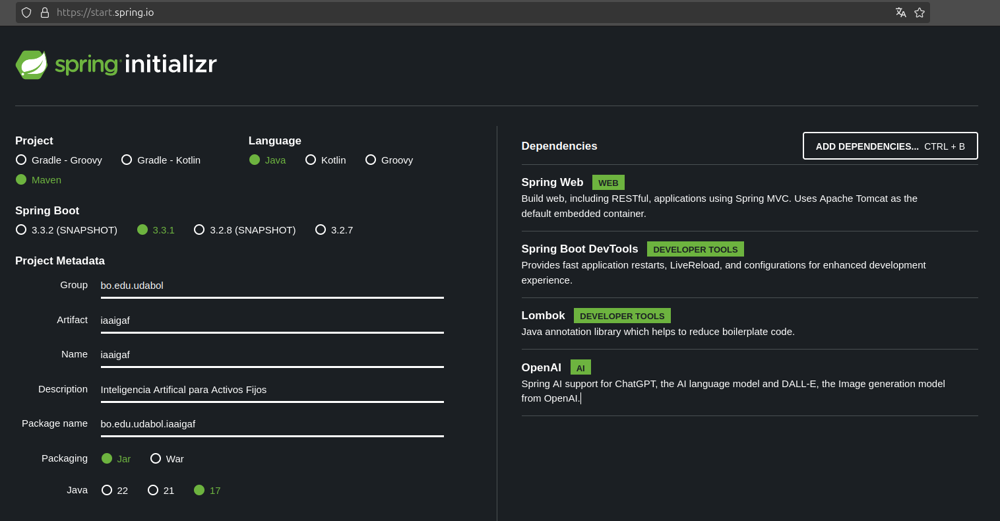

Realizado por: Cesar Nilton Vincenty Funes
cesarnvf .profesional.bo@gmail.com
Pagina WEB
Repositorio
la Inteligencia Artificial (IA) se define como el campo de estudio que se ocupa de crear sistemas informáticos inteligentes, capaces de realizar tareas que normalmente requieren inteligencia humana. Esto incluye actividades como el aprendizaje, la percepción, el razonamiento, la resolución de problemas y la toma de decisiones.
La Inteligencia Artificial generativa es un tipo que se enfoca en la creación de contenido nuevo a partir de patrones y datos existentes, puede producir texto, imágenes, música, video y otros tipos de contenido.
Es un marco de trabajo que simplifica considerablemente el desarrollo de aplicaciones Java, proporcionando un entorno de desarrollo muy fácil.
El proyecto Spring AI tiene como objetivo agilizar el desarrollo de aplicaciones que incorporen funcionalidades de inteligencia artificial sin complejidad innecesaria.

spring.application.name=iaaigaf
spring.ai.openai.api-key=sk-proj-xxxx
spring.ai.openai.chat.options.model=gpt-3.5-turbo
@RestController
@RequestMapping("/api/v1/ia")
public class InicioControlador {
@Autowired
ChatModel chatModel;
@GetMapping("/preguntame")
public String preguntame(@RequestParam String pregunta) {
return chatModel.call(pregunta);
}
}
PGPASSWORD=123qwe dropdb -h localhost -p 5432 -U postgres iaaigafbd
PGPASSWORD=123qwe createdb -h localhost -p 5432 -U postgres iaaigafbd
PGPASSWORD=123qwe psql -h localhost -p 5432 -U postgres -d iaaigafbd -f iaaigafTablas001.sql
PGPASSWORD=123qwe psql -h localhost -p 5432 -U postgres -d iaaigafbd -f iaaigafDatos001.sql
drop schema public;
create schema public;
create table activosfijos(
idactivodijo serial not null primary key,
activofijo varchar,
costoinicial varchar,
vidautil integer,
fechacompra date
);
insert into activosfijos(activofijo, costoinicial, vidautil, fechacompra) values
('EQUIPO DE COMPUTACION', 5500.00, 48, '01/01/2022'),
('ESCRITORIO DE MADERA', 1500.00, 120, '01/03/2019'),
('LAPTOP', 9500.00, 48, '01/01/2023');
@Data
public class Activosfijos {
private Long idactivodijo;
private String activofijo;
private BigDecimal costoinicial;
private Integer vidautil;
private LocalDate fechacompra;
}
@Mapper
public interface ActivosfijosRepositorio {
@Select("select * from activosfijos")
List<Activosfijos> obtenerTodos();
}
@Service
public class ActivosfijosServicio {
@Autowired
ActivosfijosRepositorio activosfijosRepositorio;
public List<Activosfijos> obtenerTodos() {
return activosfijosRepositorio.obtenerTodos();
}
}
@RestController
@RequestMapping("/api/v1/activosfijos")
public class ActivosfijosControlador {
@Autowired
ActivosfijosServicio activosfijosServicio;
@GetMapping
ResponseEntity <?> obtenerTodos(){
return new ResponseEntity<List<Activosfijos>>(activosfijosServicio.obtenerTodos(), HttpStatus.OK);
}
}
spring.datasource.driver-class-name=org.postgresql.Driver
spring.datasource.url=jdbc:postgresql://localhost:5432/iaaigafbd
spring.datasource.username=postgres
spring.datasource.password=123qwe
mybatis.type-aliases-package=bo.edu.udabol.iaaigaf.modelo
@Autowired
ChatModel chatModel;
....
public String listarActivosfijos(List<Activosfijos> activos) {
StringBuilder sb = new StringBuilder("Lista de activos fijos:\n");
for (Activosfijos activo : activos) {
sb.append(String.format("ID: %d, Activo: %s, Costo Inicial: %s, Vida Útil: %d años, Fecha de Compra: %s\n",
activo.getIdactivodijo(), activo.getActivofijo(), activo.getCostoinicial(),
activo.getVidautil(), activo.getFechacompra()));
}
return sb.toString();
}
public String preguntame(String pregunta) {
List<Activosfijos> activosfijos = activosfijosRepositorio.obtenerTodos();
String listaActivosFijos = listarActivosfijos(activosfijos);
String preguntaConDatos = listaActivosFijos + "\n\nPregunta: " + pregunta;
return chatModel.call(preguntaConDatos);
}
@GetMapping("/lista")
public String ListarActivosfijos() {
return activosfijosServicio.listarActivosfijos(activosfijosServicio.obtenerTodos());
}
@GetMapping("/preguntame")
public String preguntame(@RequestParam String pregunta) {
return activosfijosServicio.preguntame(pregunta);
}
Muchas gracias por su atencion.